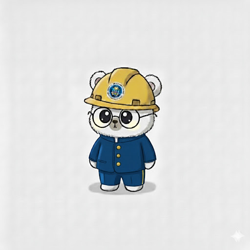

私たちは
「能登の一日も早い復興」
「中高生の防災意識向上」
を目指しています。
この目的を達成するため、私たちはプロジェクトをはじめとする様々な支援・防災活動を全国で展開しております。
NSF REPRESENTATIVE
代表挨拶
― 中高生の発想で、防災の『あたりまえ』を塗り替える ―
NSFは、中高生の発想力と行動力で、防災・復興の未来に向き合ってきました。
災害を“遠い出来事”で終わらせず、一人ひとりが考え、備え、動ける社会をつくること。
その小さな行動の積み重ねが、誰かの命を守る力になると信じています。
これからも、一人ひとりが挑戦できる場所として、NSFをさらに前へ進めていきます。
応援メッセージ
防災特命大臣 坂井学 氏
未来を見据え、防災について学び、考え、語り合おうとするみなさんの姿勢に、心から敬意を表します。防災は命と暮らしを守る大切な知恵であり誰もが向き合うべきテーマです。知恵と胆力を携え、一歩先を見据えながら、自分らしいリーダーシップを育んでください。皆さんの挑戦に大きな期待を寄せています。
石川県知事 馳浩 氏
能登では、令和６年元日の能登半島地震等で大きな被害が発生し、現在、復旧・復興に全力で取り組んでいます。皆さんは募金活動などに取り組まれ、今回、能登の魅力を全国に発信する活動をされるとお聞きしました。こうした取組は、能登の人々に勇気を与え、能登の復興の大きな後押しになるものと考えています。石川県知事として深く感謝申し上げます。
※各氏の肩書はメッセージ提供当時の役職に基づいています。

Official Mascot
公式キャラクターの「えぬくま」君です。ヘルメットと学生服を身にまとも、全国の中高生メンバーと一緒に、能登の未来を毎日応援しています！